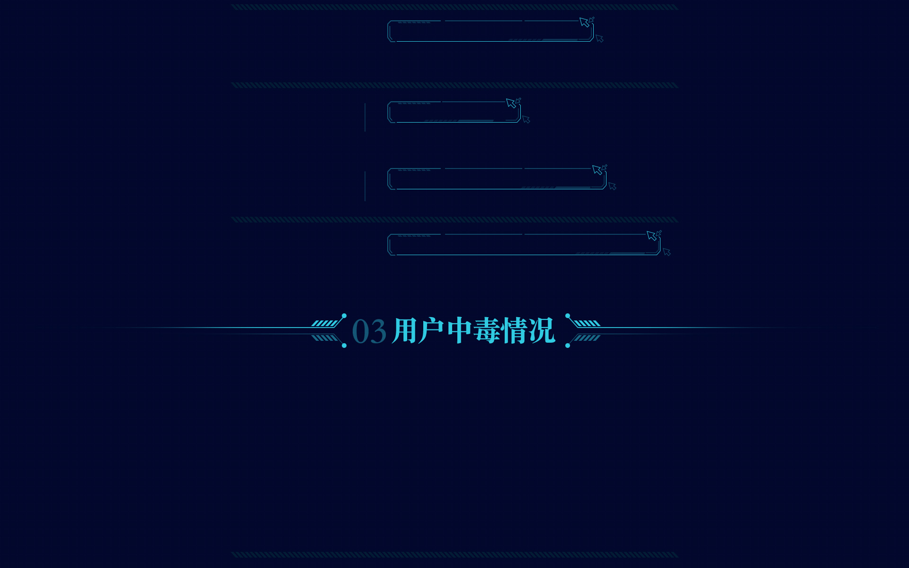

2016年7月
“暗云”bootkit木马，曾使超百万台电脑受感染，自2015年初被腾讯首次反病毒实 验室捕获并查杀至今已有1年多。从今年4月开始，该木马卷土重来，感染了数十万台 机器。新发现的暗云木马在模块分工、技术对抗等方面与老暗云相比有着明显的晋级 特征，因此我们将本次爆发的木马取名为暗云Ⅱ。电脑管家率先检测并出专杀版查杀 清理该木马。
 远控木马腾讯反病毒实验室近日拦截伪装成《时时彩玩家必看秘籍》的远控木马，该木马伪 装成文档在社交渠道传播，用户一旦下载打开，会导致电脑被操控，隐私泄密、帐 号密码被盗等严重危害。
手机木马近日，Pokemon Go游戏打得火热， 有木马作者借着Pokemon Go游戏的火热，在网络上发布植入恶意代码的“下载工具”。
“暗云”木马没有文件形态，长期潜伏在磁盘引导区，主要攻击代码放在云端，曾 有超百万台电脑受到感染，自2015年初被腾讯反病毒实验室首次捕获并查杀至今 已有1年多。
敲诈木马近日，腾讯反病毒实验室拦截到一个名为RAA的敲诈者木马，其所有的功能均在 JS脚本里完成。
近日，经腾讯反病毒实验室与相关公司核实，有不法分子伪造该公司资料成功申请 数字证书，该数字证书被用来给木马签名，导致大量安全厂商无法查杀和拦截。
近日，哈勃分析系统检测到新爆发远控木马，该木马伪装成国内知名下载软件组件 并替换原版文件重新打包，通过色情网站和小型下载站进行传播。
盗号木马近期，腾讯安全联合实验室旗下的反病毒实验室监控到多个山寨版的game2050 网站传播盗号木马，此类网站完全假冒棋牌游戏网站game2050。
系统木马技术型盗号木马集团berb本月开始大量进行推广。主要盗取lol，dnf，cf等腾讯游戏。有渐渐取代传统假登录框型盗号木马的 趋势。其主要推广方式为挂马和网吧推广。目前管家，Q盾和互娱也在密切关注该盗号集团的动向。